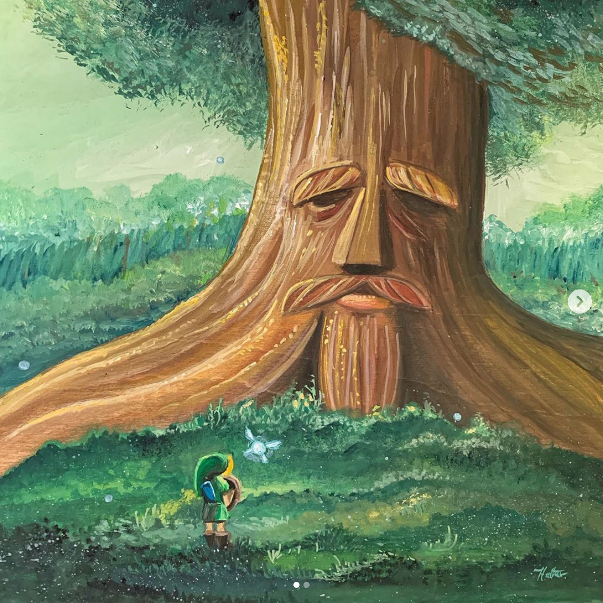
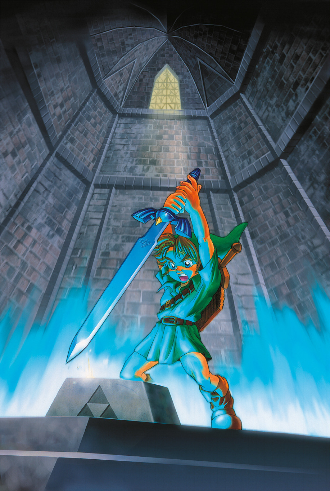
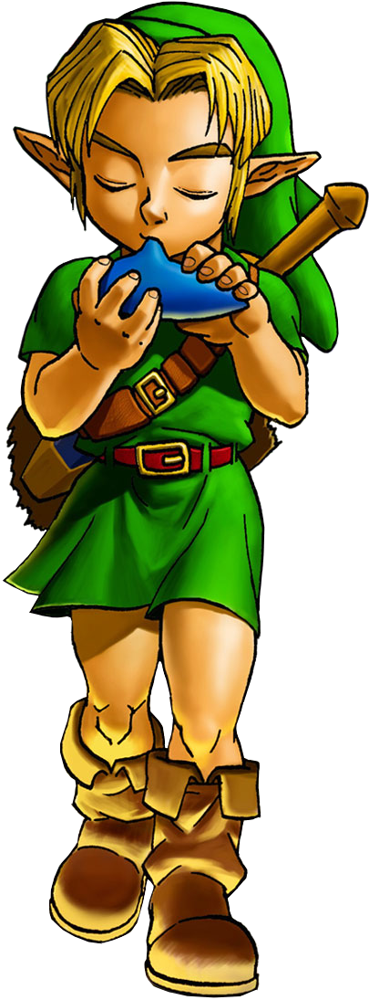
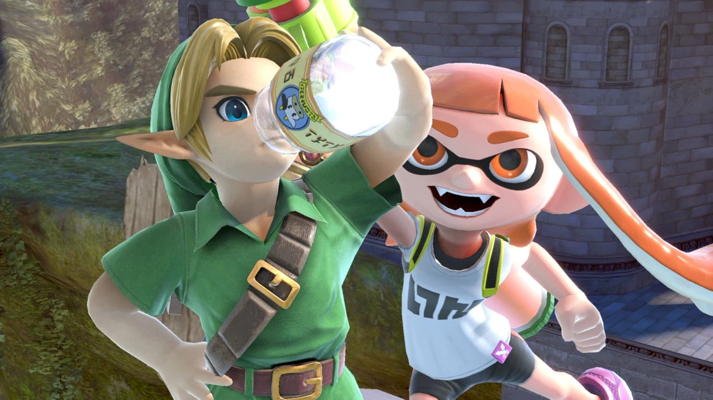
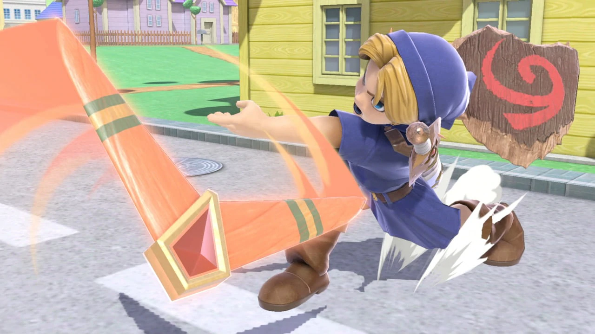

The One True Link
Ocarina of Time
Majora's Mask
Twilight Princess
Super Smash Bros. Melee
Hyrule Warriors
Young Link: The Game
Hero of Time - Official Artwork of Young Link from the Legend of Zelda: Ocarina of Time
Childhood
A little Boys Legacy
The Hero's Fate
The Ultimate Call

XXXXXXXX

XXXXXXXX

XXXXXXXX
 
XXXXXXXX